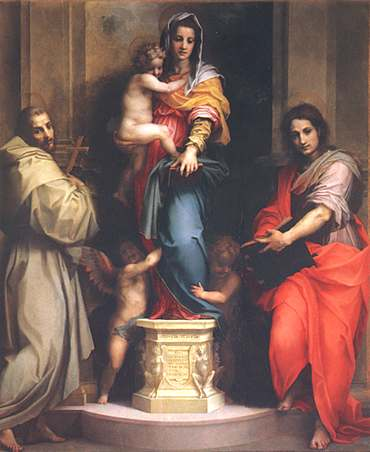
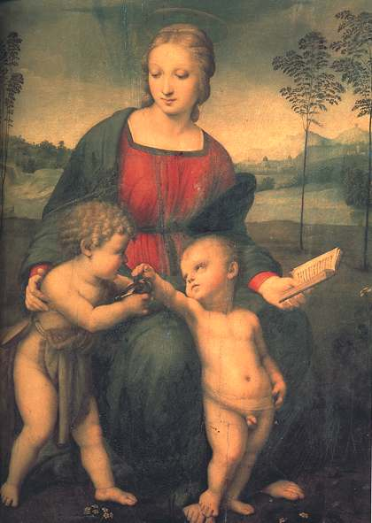

Offices Gallery, Florence. Raphael and Sarto.
← Recently Modernized Pages · Art Gallery · Home
Uffizi Gallery, Florence
Del Sarto and Raphael
Hall
26. Andrea del Sarto.
Virgin in Majesty with the Child and the St. Francis and St. John the
Evangelist. The
work is also known under the name "Madonna of the Harpies". Due to
the perfection of his drawing, the purity of his colors and the harmony of his
composition, Vasary named Andrea del Sarto "the painter without
faults". The name of this work comes from the harpies painted on the
pedestal that supports the wonderfully painted Virgin.
The painting was
executed in 1517 for the convent of St. Francis in Florence. The figures have
the greatness of Michelangelo's works, alleviated by the color that, by its
warm and soothe tonality reminds of the paintings of Raphael. From the
iconographical point of view, the Virgin reminds of the subjects of Fra
Bartolomeo, while St. John is, after Vasari, a copy after Jacopo Sansovino.
 |
 |
|
 |
 |
|
Hall 26. Raphael (Raffaello Santi), 1483-1520. Self-portrait, about 1508. Portrait of Francesco Maria della Rovere.
|
 |
 |
 |
|

Madonna of the Goldfinch, 1506. This is one of the first works of the Florentine period of the great master from Urbino. Being in contact with the Florentine milieu, Raphael gives up his earlier manner, dominated by the influence of Perugino. He approaches the instruction of Leonardo da Vinci, that can be already detected in this work, in its pyramidal organization of the composition. Raphael has built his scene with delicacy, avoiding any tension, any abrupt jump. The figures are modeled with gentleness and inserted in a atmosphere of an intimate and familiar conversation, dominated by mild and warm colors, that descend even upon the neighboring landscape, making it to participate in the same intimacy. After: Les Offices, Visite à la Galerie. 1998, Bonechi Edizioni.
Link: Raphael on this site